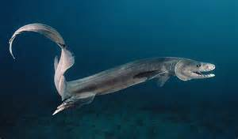

Lo squalo nastro
Lo squalo dal collare (Chlamydoselachus anguineus Garman, 1884) è una specie di squalo della famiglia dei Clamidoselachidi con una distribuzione vasta ma frammentata, negli oceani Atlantico e Pacifico. Questa specie vive sulla zona esterna della piattaforma continentale e della scarpata continentale superiore, generalmente nei pressi del fondo. Vive fino a 1300 metri di profondità, sebbene nella baia di Suruga, in Giappone, sia più comune a profondità di 50-200 metri. Presenta numerosi caratteri primitivi, che gli valsero il nome di "fossile vivente". Il suo corpo, che può raggiungere i 2 metri di lunghezza ed è di colore marrone scuro, ricorda quello di un'anguilla con le pinne dorsali, pelviche e anali in posizione molto arretrata.
lo squalo dal collare cattura le prede piegando il corpo e lanciandosi in avanti come un serpente. Le mascelle estremamente flessibili gli permettono di ingoiare prede di grosse dimensioni, mentre le file di piccoli denti aguzzi impediscono loro di fuggire. Si nutre principalmente di cefalopodi, ma consuma anche pesci ossei e altri piccoli squali. Questa specie è vivipara aplacentata: gli embrioni nascono da uova che si schiudono all'interno dell'utero della madre, e terminano lo sviluppo consumando principalmente le riserve del loro tuorlo. Lo squalo dal collare ha il periodo di gestazione più lungo di qualsiasi vertebrato: può durare tre anni e mezzo. Nascono da 2 a 15 piccoli per volta, e non vi è una stagione riproduttiva ben distinta.
Con la sua forma allungata, simile a un'anguilla, lo squalo dal collare è stato per lungo tempo paragonato al serpente di mare dei miti. La testa è larga e appiattita con un muso corto e arrotondato. Diversamente che in altri squali, le narici sono situate sulla sommità della testa, che ricorda quella di un serpente. Le narici sono delle fessure verticali, e le aperture inalanti ed esalanti sono separate da un lembo di pelle. Gli occhi sono degli ovali orizzontali, di medie dimensioni e privi di membrana nittitante (terza palpebra). Le mascelle molto lunghe sono posizionate all'estremità del muso, al contrario di quelle della maggior parte degli squali. Gli angoli della bocca sono privi di solchi o pieghe. Le file di denti sono piuttosto ben distanziate, e sono in numero di 19-28 sulla mascella superiore e di 21-29 su quella inferiore. I circa 300 denti sono piccoli, tricuspidati (a forma di tridente) e molto affilati; sono identici su ambo le mascelle. Ha sei paia di fessure branchiali con un aspetto frangiato dovuto alle estremità dei filamenti branchiali. Il primo paio di fessure branchiali passa attraverso la gola, formando un «collare».
La lunghezza massima conosciuta è di 1,7 m per i maschi e di 2,0 m per le femmine. Questo dimorfismo sessuale si spiega con il fatto che la femmina deve ospitare degli embrioni in sviluppo in un corpo straordinariamente filiforme per uno squalo. Le pinne pettorali sono corte e arrotondate. L'unica pinna dorsale è piccola e in posizione molto arretrata, a livello della pinna anale, e ha un bordo arrotondato. Le pinne pelviche e anali sono grandi, larghe e arrotondate, e anch'esse posizionate molto indietro. La pinna caudale è molto lunga e approssimativamente triangolare, senza lobo inferiore o incavo ventrale sul lobo superiore. Ha due spesse pliche di pelle lungo il ventre, separate da una scanalatura, la cui funzione è sconosciuta. Il ventre è relativamente più grande nelle femmine che nei maschi, con le pinne pelviche poste più vicino alla pinna anale. I denticoli dermici sono di piccola taglia e a forma di punta di cesello. Divengono più grandi e resistenti sul margine dorsale della pinna caudale. Questa specie ha una colorazione uniforme bruno scuro o grigio, talvolta più pallida sulla parte inferiore. Lo squalo dal collare differisce dal cugino dell'Africa australe, C. africana, per il numero maggiore di vertebre (160-171 per C. anguineus contro 147 per C. africana) e di spirali nell'intestino (rispettivamente 35-49 e 26-28), così come per diverse misure proporzionali, come testa più lunga e fessure branchiali più corte.